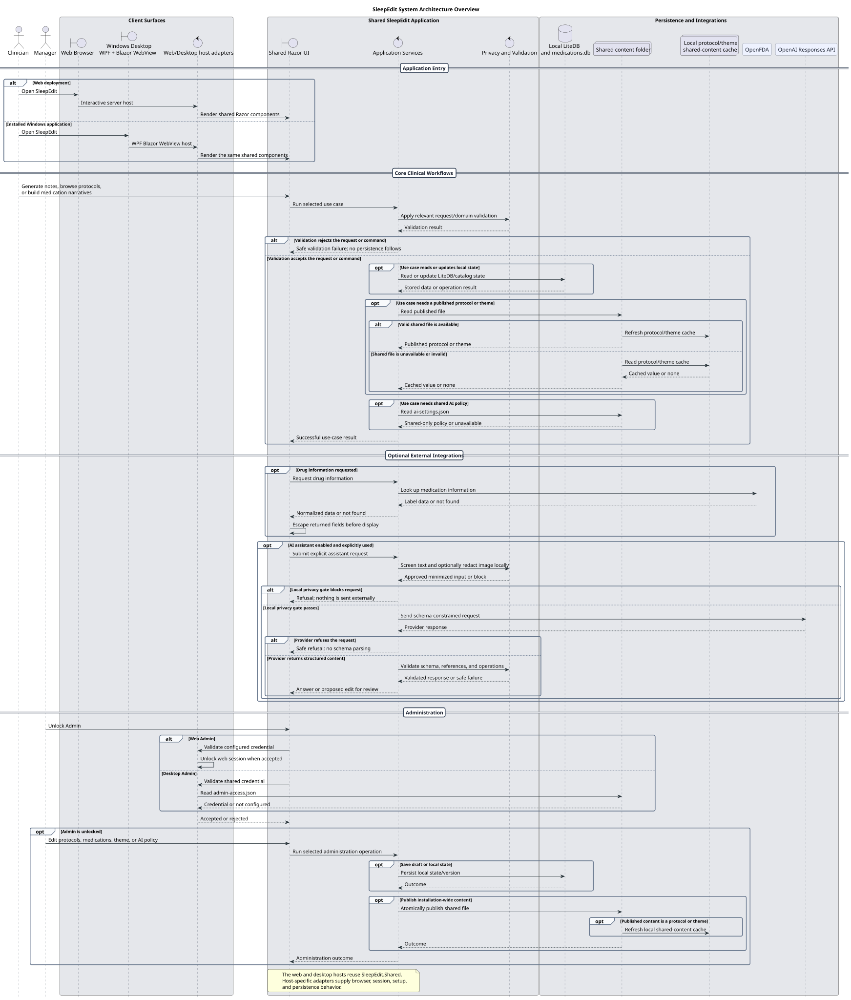
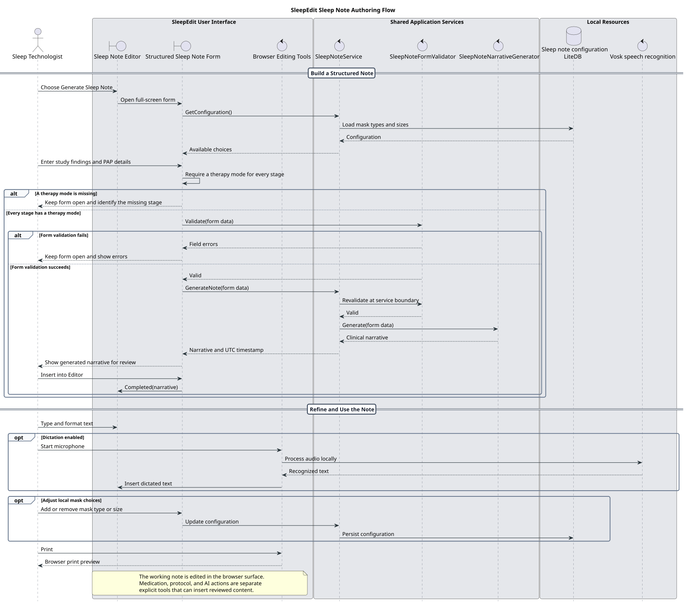
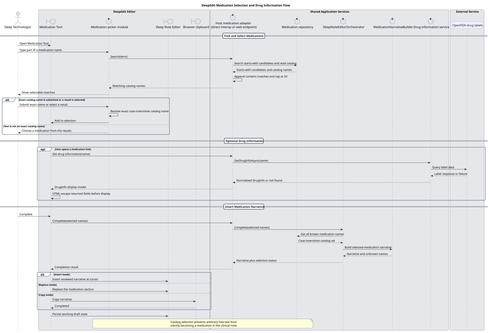
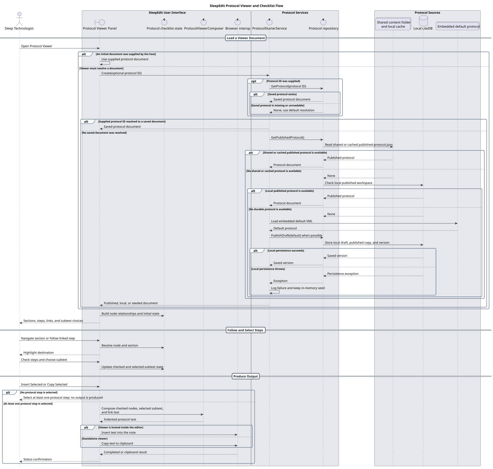
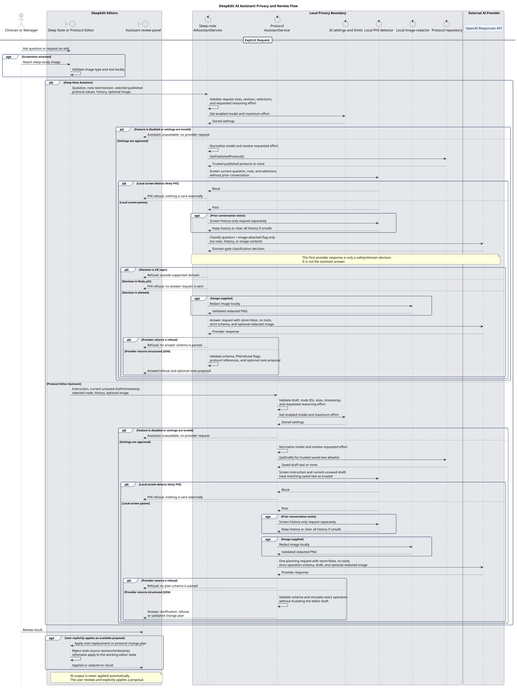
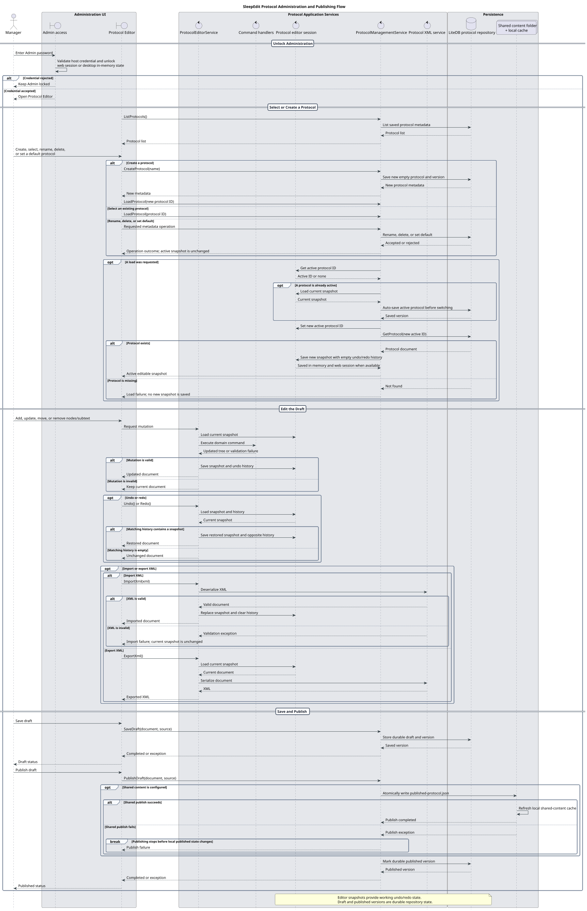
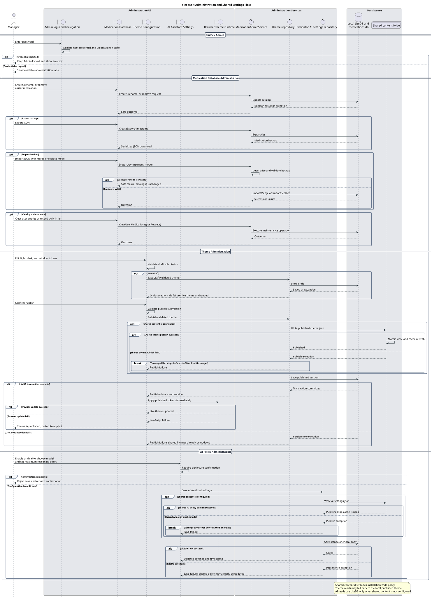
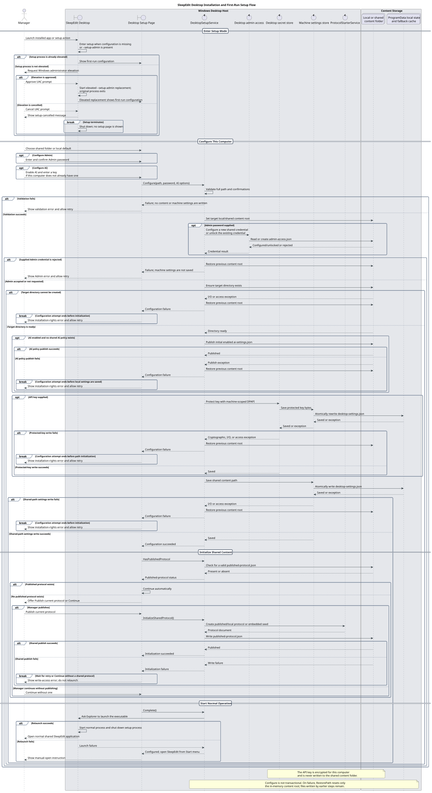

System architecture overview
Web and Windows hosts reuse the same shared UI and application services while supplying host-specific adapters.

Source-verified system documentation
Read the diagrams in sequence: begin with the system boundary, follow the clinician-facing workflows, review the AI privacy boundary, then move through administration and desktop deployment.
Start with the hosts, shared application, persistence boundaries, and optional integrations that frame every detailed workflow below.
Web and Windows hosts reuse the same shared UI and application services while supplying host-specific adapters.

These flows show how clinicians author notes, add catalog-backed medication narratives, and use published protocols.
Structured findings are validated, converted into a reviewable narrative, and inserted only after an explicit user action.

Medication names must resolve to catalog entries before becoming part of the clinical narrative.

The viewer resolves the best available protocol source, tracks selections, and produces reviewed output.

The AI flow is shown separately because its privacy gates and review-only behavior apply across the authoring surfaces.
Local PHI screening and image redaction occur before provider calls, and proposed changes are never applied automatically.

Administration flows explain how durable drafts, published content, shared configuration, and local state are managed.
Authenticated managers create and edit protocol drafts, use undo and import/export, and publish shared content.

Medication catalogs, themes, and AI policy have distinct validation, persistence, and publication behavior.

Finish with the machine-level setup that establishes shared content, local secrets, initial policy, and normal desktop startup.
Elevated setup configures shared content, machine-scoped secrets, initial policy, and optional protocol publication.
